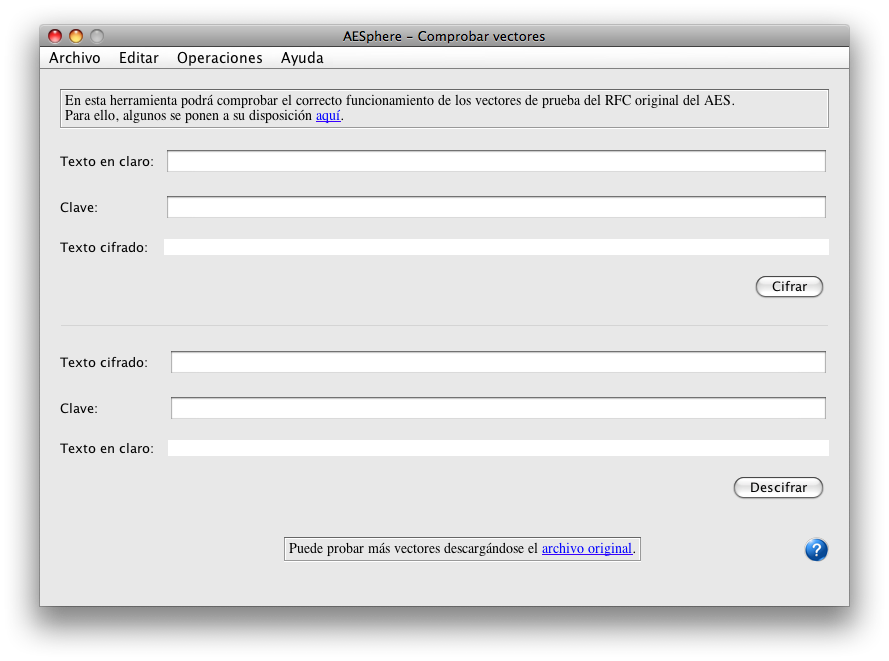
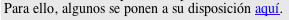
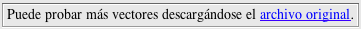

From this window we can test the correct functioning of the AES algorith implemented in AESphere
In order to do so, the test vectors of the original AES RFC can be used. With the program installation, some of them are provided in order to test the algorith:
but the whole pack can be downloaded if an exhaustive test of the process wants to be performed.
